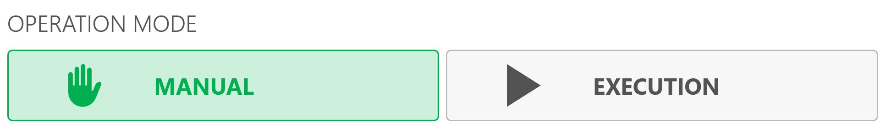
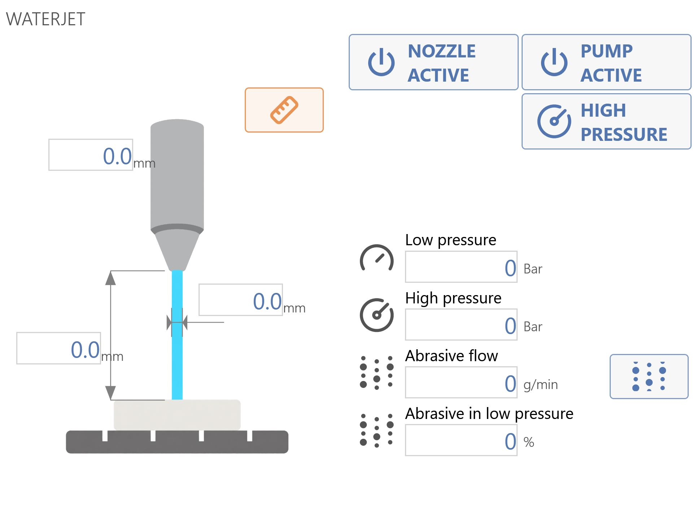
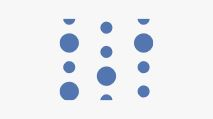
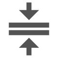

This area is located at the top centre of the interface. It allows the operator to perform the following actions:
Automatic parking When pressed, the machine automatically moves the “X”, “Y”, “Z” and “C” axes to their zero positions. The machine performs the movements in the following order: (A) - “Z” axis to the absolute zero position; (B) - “C” axis to the absolute 0 position; (C) - “X” and “Y” axes simultaneously to their absolute zero positions;
Manual Tool Change Pressing the button starts the tool-change procedure.
Remote Control Enables/disables the Remote Control.
Operating mode
The following area is located in the upper-right section of the interface and allows the operator to make the following selection:

Manual Sets the machine status to Manual.
Execution Sets the machine status to Execution.
Axes
This area is located in the upper-left section of the interface. Its layout and content may vary according to the selected operating mode:
Manual
In Manual operating mode, the area appears as shown in the following example image:
Axis buttons
The following buttons are available only in this operating mode:
Reset Axis Pressing this button sets the active origin to zero at the current position of the corresponding axis (X, Y or Z). The axis reset operation can only be performed on origins other than 0 (zero). To use the tool coordinate origin (TCP), the correct dimensions of the installed tool must be set before pressing the Reset Axis button.
Reset X and Y origins The X- and Y-axis origins can be reset using the cross laser.
Reset Z origin The Z-axis origin can be reset using the slab probe.
Decrease axis coordinate The coordinate of the selected axis decreases for as long as the button is held down.
Increase axis coordinate The coordinate of the selected axis increases for as long as the button is held down.
Execution
In Execution operating mode, the area appears as shown in the following example image:
Axis commands
This area is located immediately to the right of the Axesarea and provides the following operations:
RTCP coordinates The RTCP function allows the operator to position the machine for an inclined cut while keeping the tool height unchanged as the inclination is adjusted during positioning. The inner edge of the disc remains in the same position as at the start of the movement.
Operating procedure:
Set the target coordinate in the area for the “A” (inclination) or “C” axis
Pressing the RTCP button starts the inclination or rotation function while keeping the lowest point of the tool fixed.
NOTE
Movement using the RTCP command is permitted only when the coded key is inserted in the appropriate station on the operator console.
Wait for the machine to reach the set coordinate.
MDI / MDI RTCP Moves the machine from the Position coordinates to the Commanded position.
NOTE
The
MDI
command is available only in
Manual
.
Origin
This area is located in the upper-right section of the interface, immediately below the Operating mode. It allows the operator to view the axis origins and RTXP origins, and to view and modify the active origin.
ISO
This area extends across the lower-left section of the interface and allows the operator to manage ISO files. When an ISO file is loaded, the interface appears as follows:
Top bar
Start Starts the currently loaded PGM.
Progress Displays the current machining progress.
Estimated time Displays an estimate of the remaining time.
Thickness Displays the slab thickness.
Bottom bar
Preview Displays a preview of the selected PGM in an area on the right-hand side of the ISO area.
Parts Displays the parts.
Dry Run Selecting this operating mode allows machining to be performed at the machine’s maximum speed.
Test ISO This option tests the loaded file to check for syntax errors. Press the “CYCLE START” button and the machine will run through all lines of code virtually without moving the axes.
Select file Opens File Explorer to select a file.
Edit Edits the selected file.
Automatic Automatic status.
Block search This button is displayed only after at least one program has been loaded into the list and allows a block to be searched for by line.
Waterjet
This area is located in the centre-right section of the application and provides the operator with the following options:

Tool Plus buttons
Measure tool Performs the procedure for automatically measuring the length of the Tool Plus tool.
Jet active Turns on the jet and indicates whether it is active.
Pump active Turns on the pump and indicates whether it is active.
High pressure Allows high or low pressure to be selected.

Abrasive active Activates the use of abrasive.
Tool Plus parameters
Low pressure Water pressure when the water is delivered at low pressure.
High pressure Water pressure when the water is delivered at high pressure.
Abrasive flow Quantity of abrasive conveyed in one minute.
Abrasive in LP Percentage of abrasive flow when the machine is in low-pressure mode.
Photo capture
This area is located at the bottom of the interface. This function generally allows a photograph of the machine worktable to be taken using the built-in camera.

Thickness This value must be entered to capture an image of a slab correctly.
Take photo Provides access to the image acquisition management panel.
Photo capture panel
Pressing this icon takes a photo and opens the acquired image page. From this page, the photo can be discarded or saved by specifying the save path and the required thickness.
Save parameters
Photo name This text field sets the name of the captured image.
Photo save path This text field sets the path where the image will be saved.
Select photo path Opens File Explorer and allows the operator to select an image path.
Take photo
Thickness This value must be entered to capture an image of a slab correctly.
Take photo This button allows the operator to acquire a new image using the camera connected to the application.
Feed
This area is located in the lower-right section of the interface and displays the Feedvalue, which represents the machine’s interpolated movement.